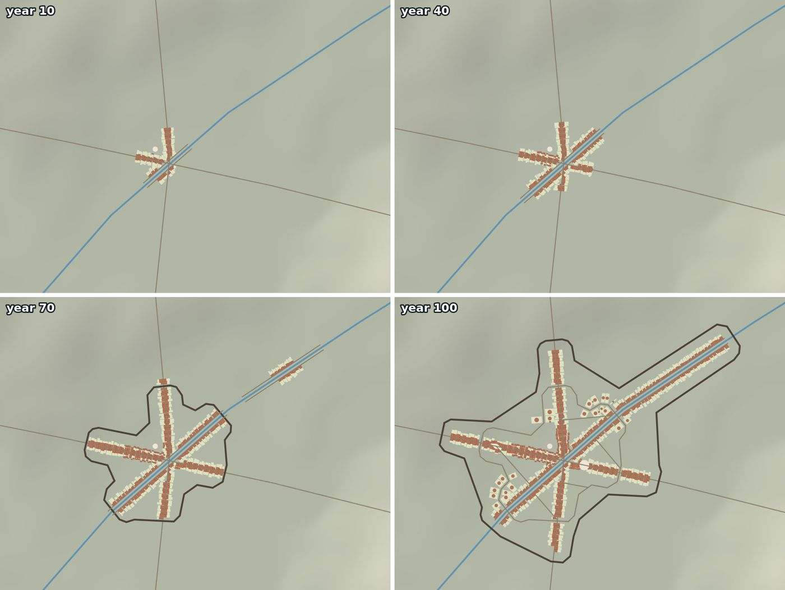
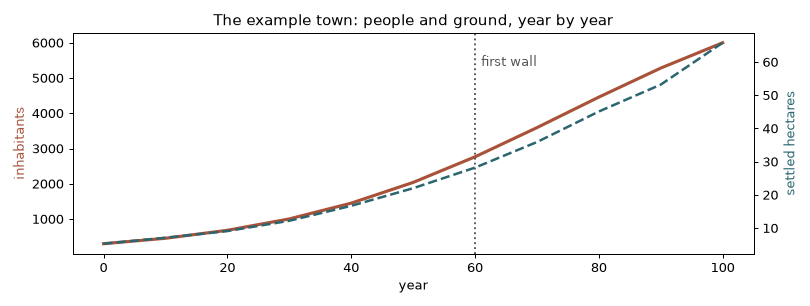
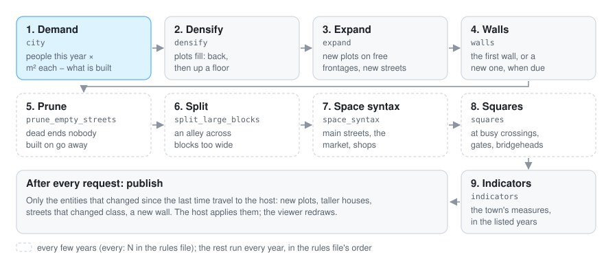
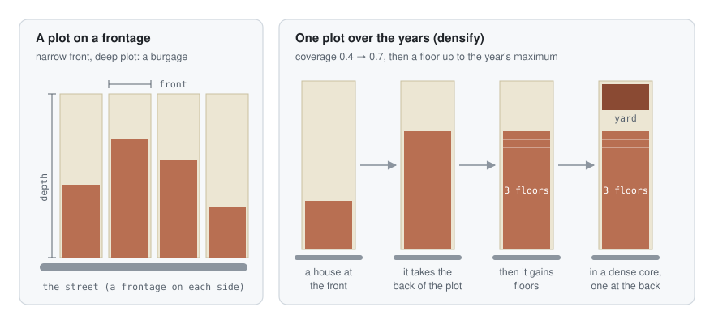
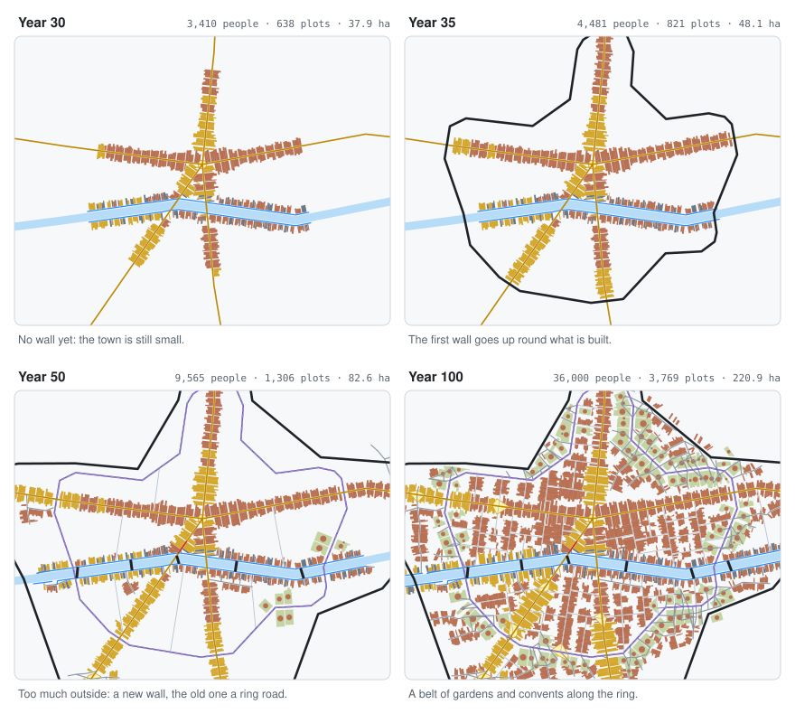
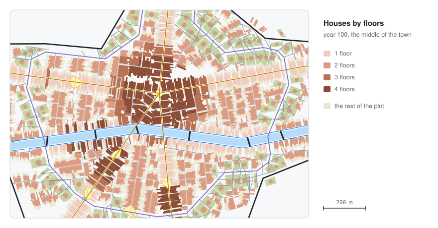
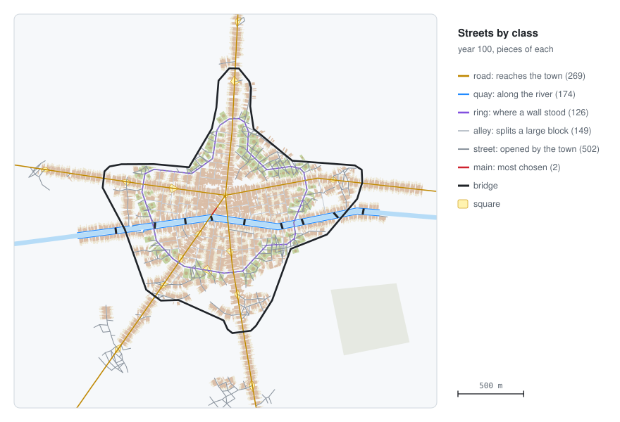
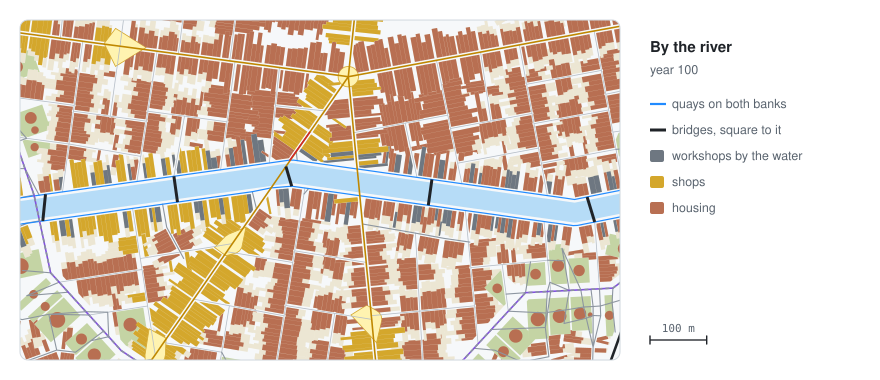

Old towns grew in a recognisable way. People arrived; first they built along the roads; the houses filled their plots, back and then up; when there was no room left, new streets opened; busy crossings became squares; and one day the town was big and rich enough to build a wall. The urban plugin follows that story year by year, with rules taken from studies of real historic towns.


The example town: from 300 to 6,000 people in 100 years. It follows the roads and the river, and raises its first wall at year 60.
Every rule comes from a published model; the only rule of its own is the walls’, because no published model simulates them. It knows nothing about any particular city: the scenario says where, how many people and when.
The other pictures in this page show a second made-up town, a river town that grows from 600 to 36,000 people in 100 years; its whole rules file is in getting started.
Each year, the town asks itself one question: do the people fit? The city rule sets up a city at the start and opens every year. Its instance name names the city;
the other rules find it by their city parameter, so several cities can grow in one simulation.
Rules run in the order of the rules file, usually:

logistic: from from people in from_year to
to in to_year, towards a ceiling). The floor space the people need is
inhabitants × square_metres_per_person; the deficit is what is missing.rare_floors is a quota: at most its
share of the plots may stand that high. Plots already that high keep their place in it and the
most wanted of the rest fill what is left, so the share does not creep up as the town’s most
wanted places move. In a dense core, a full plot builds at the back, round a yard.open_streets_below waits:
a street nearby opens first. When no frontage is left, new streets grow from the network, along
a tensor field (Chen et al. 2008) that follows the contours, the roads and the river; organic
streets wander, continue from their ends and close into blocks.first_wall.population or, at the latest, in first_wall.year. It follows the concave hull of
what is built (or the given wall_outline), tied to the supporting rock when there is one, with
gates where roads and main streets cross it (published as gate points) and a clear strip
inside. When the suburbs outside
hold more than new_wall_when_outside of the floor space and the wall is at least 12 years old,
a new one goes up and the old one becomes a ring road with a belt of gardens and convents
(Whitehand 1967). Its height can rise over the years (wall_rise) or follow the calendar
(wall_heights).grace_years go away.maximum_side.samples origins within local_radius: the most chosen streets become main streets, the most
central square the market, and plots on them shops.per_inhabitants people, at least spacing apart.indicators event with the measures of the city’s form.After every request the plugin publishes the city once (AfterStep): only the entities that
changed since the last time travel to the host.

A plot is a burgage: a narrow front on a street and a long depth behind it. Densify works on the
plots that are already there (steps above); expand lays new ones along free frontages, and only
opens streets when the frontages left are not wanted enough. With open_streets_below: 0.3 a town
stays a street village along its roads; with 0.5 to 0.7 it opens back streets sooner and grows
compact. In the river town (0.5) the first decades are ribbons along the roads and the quays; the
back streets come later, when the frontages near the centre run out.

The river town reaches 4,000 people, its first_wall.population, in year 33, and the wall goes up
round what is built. By year 49 too much of the floor space lies outside, so a new wall goes up
and the old line becomes a ring road; new plots in a belt along it are large gardens and convents
(use extensive), and the town fills the room between the two walls.
elevation field (put the terrain plugin first), or a relief file.
Slopes steer streets along the contours and keep plots off steep ground. When the ground comes
from the world and changes (the terrain’s erosion rule moves it), the city takes it again at
the start of the next year.


Every street piece has a class (see outputs). Roads come with the inputs; quays line the river; a ring follows a wall that was replaced; alleys split large blocks; the rest are streets the town opened. Space syntax turns the most chosen streets and alleys into main streets. In the river town, the three roads carry most of the movement, so only two pieces of the streets it opened become main streets.
Rivers come as river features: a line along the axis with a width (km); their water is an
obstacle. With the scenario’s river settings they shape the town: streets align with the banks,
quays line both banks once the town reaches them, plots by the water are wanted and some become
workshops (mills, tanners), and bridges are spaced and square to the river. The river is published
as a river entity and quays as streets of class quay.

With river: {from_world: true} the town also takes the rivers the world already has, such as the
ones the terrain’s erosion rule finds where the water gathers, so the town and the ground agree
on where the water runs. They are taken once, when the city starts: a town does not move its
quays and bridges after a river. Only the parts near the window count, and narrowest (km)
leaves out the streams too narrow to shape a town.
When the drawn scene already has something where the city grows (an old town, a forest), a clear
feature marks it: at the start the plugin sends a clear_area for the scenario’s clear_nodes
(holes in the feature are spared), and every year it clears the tree_nodes under the new plots.
GEOS, the geometry engine shapely uses: sudo apt install libgeos-dev, sudo dnf install
geos-devel or brew install geos. While it is not installed, a .geos-local/env.sh (ignored by
git) can point cgo at an unpacked copy: . .geos-local/env.sh before building. More in
getting started.